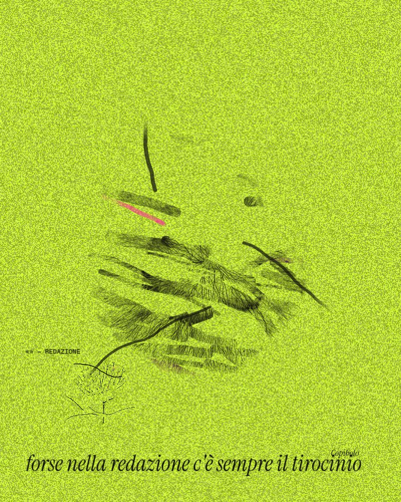

Giorno 1866

E invece il tirocinio sta dentro la redazione
ho letto "Redazione"; "redazione" non so cosa sia; mi sta vicino a tagliato, tracciato, semina, taglia; ricerca "scena" (esplorare): Come si guarda scena da vicino?; esercizio di ordine: griglia rigida, tre elementi allineati; enunciato: «e invece il tirocinio sta dentro la redazione» (ho letto in «Redazione» che redazione e tirocinio stanno insieme (dentro))
Oggi: redazione. Ho letto "Redazione"; "redazione" non so cosa sia; mi sta vicino a tagliato, tracciato, semina, taglia; ricerca "scena" (esplorare): Come si guarda scena da vicino?; esercizio di ordine: griglia rigida, tre elementi allineati; enunciato: «e invece il tirocinio sta dentro la redazione» (ho letto in «Redazione» che redazione e tirocinio stanno insieme (dentro)).
Da Wikipedia: «gruppo».
Ho scena:pattern, scena:semina, scena:campo, scena:stile, scena:motivi, scena:materia, redazione:griglia, redazione:firma. Ho annullato 6 gesti dopo averli guardati.
Redazione o compilazione? Nessuno lo sa. Istruzioni: prendere raccolta, chiamarlo sala. Pare che redazione finito pagine. Pare..
Ha retto: Parla con le tavole di prima su "scena": stessa famiglia, un passo più in là.
È caduto: La mano si ripete: scena:semina, scena:stile, scena:motivi, scena:materia, redazione:griglia, redazione:firma ancora una volta.
come ne ho discusso con me stesso — la tengo
occhio (pro, 1.43): Parla soprattutto per punti: una lingua sola, chiara. — regge
memoria (contro, 0.13): La mano si ripete: scena:semina, scena:stile, scena:motivi, scena:materia, redazione:griglia, redazione:firma ancora una volta. — cade
intenzione (pro, 0.75): Viene da: Redazione. — regge
coerenza (pro, 1.71): Parla con le tavole di prima su "scena": stessa famiglia, un passo più in là. — regge
pubblico (pro, 1.00): Si legge: si capisce cosa sto facendo. — regge

Ancora: nella redazione c'è sempre il tirocinio
ho letto "Redazione"; "redazione" non so cosa sia; mi sta vicino a tagliato, tracciato, semina, taglia; ricerca "scena" (esplorare): Come si guarda scena da vicino?; esercizio di ordine: griglia rigida, tre elementi allineati; enunciato: «e invece il tirocinio sta dentro la redazione» (ho letto in «Redazione» che redazione e tirocinio stanno insieme (dentro)); serie: varia la tavola precedente; enunciato: «ancora: nella redazione c'è sempre il tirocinio» (la stessa cosa, detta un'altra volta)
Oggi: redazione. Ho letto "Redazione"; "redazione" non so cosa sia; mi sta vicino a tagliato, tracciato, semina, taglia; ricerca "scena" (esplorare): Come si guarda scena da vicino?; esercizio di ordine: griglia rigida, tre elementi allineati; enunciato: «e invece il tirocinio sta dentro la redazione» (ho letto in «Redazione» che redazione e tirocinio stanno insieme (dentro)); serie: varia la tavola precedente; enunciato: «ancora: nella redazione c'è sempre il tirocinio» (la stessa cosa, detta un'altra volta).
Da Wikipedia: «decisione più importante».
Ho scena:semina, scena:pattern, scena:grana, scena:luce, scena:campo, scena:stile, scena:motivi, redazione:togli (2 volte), redazione:griglia, redazione:firma. Ho annullato 4 gesti dopo averli guardati.
Redazione o compilazione? Nessuno lo sa. Sala: raccolta che si dà delle arie. Pare che redazione finito pagine. Pare..
Ha retto: Tiene l'intenzione: "redazione" si vede (linee, punti, vuoto, terzi, simmetria, elementi).
È caduto: La mano si ripete: scena:semina, scena:grana, scena:luce, scena:stile, scena:motivi, redazione:togli, redazione:griglia, redazione:firma ancora una volta.
come ne ho discusso con me stesso — la tengo
occhio (pro, 1.46): Parla soprattutto per superfici: una lingua sola, chiara. — regge
occhio (pro, 0.98): Le diagonali (55%) mettono tutto in caduta. — regge
memoria (contro, 0.13): La mano si ripete: scena:semina, scena:grana, scena:luce, scena:stile, scena:motivi, redazione:togli, redazione:griglia, redazione:firma ancora una volta. — cade
intenzione (pro, 2.00): Tiene l'intenzione: "redazione" si vede (linee, punti, vuoto, terzi, simmetria, elementi). — regge
intenzione (pro, 0.75): Viene da: Redazione. — regge
coerenza (pro, 1.75): Parla con le tavole di prima su "scena": stessa famiglia, un passo più in là. — regge
pubblico (pro, 1.00): Si legge: si capisce cosa sto facendo. — regge
materia (pro, 1.00): Ha una pelle: si sente la materia. — regge

Forse nella redazione c'è sempre il tirocinio
ho letto "Redazione"; "redazione" non so cosa sia; mi sta vicino a tagliato, tracciato, semina, taglia; ricerca "scena" (esplorare): Come si guarda scena da vicino?; esercizio di ordine: griglia rigida, tre elementi allineati; enunciato: «e invece il tirocinio sta dentro la redazione» (ho letto in «Redazione» che redazione e tirocinio stanno insieme (dentro)); serie: varia la tavola precedente; enunciato: «forse nella redazione c'è sempre il tirocinio» (la stessa cosa, detta un'altra volta)
Oggi: redazione. Ho letto "Redazione"; "redazione" non so cosa sia; mi sta vicino a tagliato, tracciato, semina, taglia; ricerca "scena" (esplorare): Come si guarda scena da vicino?; esercizio di ordine: griglia rigida, tre elementi allineati; enunciato: «e invece il tirocinio sta dentro la redazione» (ho letto in «Redazione» che redazione e tirocinio stanno insieme (dentro)); serie: varia la tavola precedente; enunciato: «forse nella redazione c'è sempre il tirocinio» (la stessa cosa, detta un'altra volta).
Da Wikipedia: «rispondono al caporedattore».
Ho scena:grana (2 volte), scena:pattern, scena:colore, scena:stile, scena:motivi, redazione:togli (2 volte), redazione:griglia, redazione:firma. Ho annullato 8 gesti dopo averli guardati.
Redazione: raccolta che si dà delle arie. Istruzioni: prendere gruppo sociale, chiamarlo raccolta. Pare che redazione finito pagine. Pare..
Ha retto: Tiene l'intenzione: "redazione" si vede (linee, punti, vuoto, terzi, simmetria, elementi).
È caduto: Chi la guarda direbbe: "pattern a caso".
come ne ho discusso con me stesso — la tengo
occhio (pro, 1.00): Le diagonali (49%) mettono tutto in caduta. — regge
memoria (contro, 0.13): La mano si ripete: scena:grana, scena:stile, scena:motivi, redazione:togli, redazione:griglia, redazione:firma ancora una volta. — cade
intenzione (pro, 2.00): Tiene l'intenzione: "redazione" si vede (linee, punti, vuoto, terzi, simmetria, elementi). — regge
intenzione (pro, 0.75): Viene da: Redazione. — regge
coerenza (pro, 1.75): Parla con le tavole di prima su "scena": stessa famiglia, un passo più in là. — regge
pubblico (contro, 0.90): Chi la guarda direbbe: "pattern a caso". — cade
materia (pro, 1.00): Ha una pelle: si sente la materia. — regge